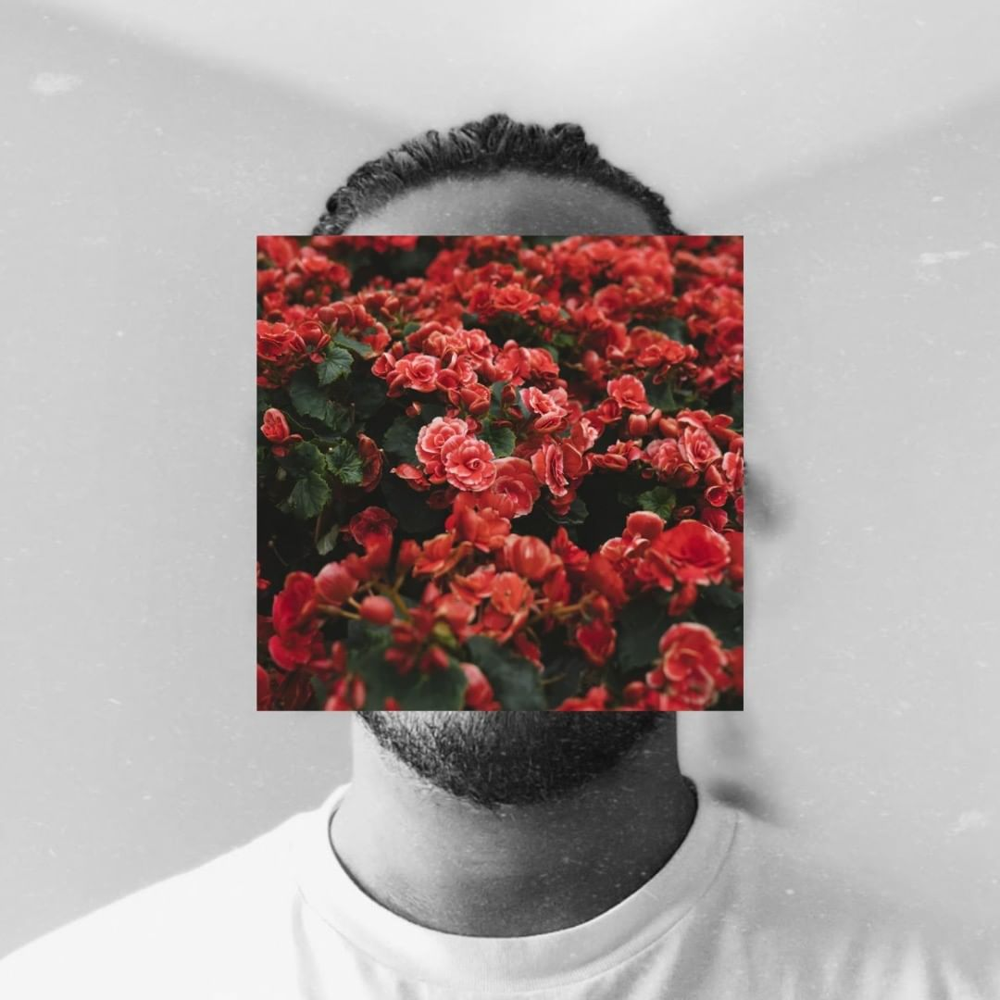

Minhas viagens me tornaram um estudante sobre a vida e de alguma forma, me fez escolher vários caminhos cruzados.
A sede pela estrada selvagem deu lugar para a minha direção e finalidade.
Passo a maior parte dos meus dias com pensamentos fugazes enquanto estou escrevendo ou ouvindo.
Enquanto o mundo ao meu redor evolui, reflito sobre o que mais importa. As estradas que minhas escolhas iram cruzar em seguida.
Enquanto produzo o 1967, sinto muita alegria em poder escreves essas historias.
Vejo você em breve.
- 1967}
